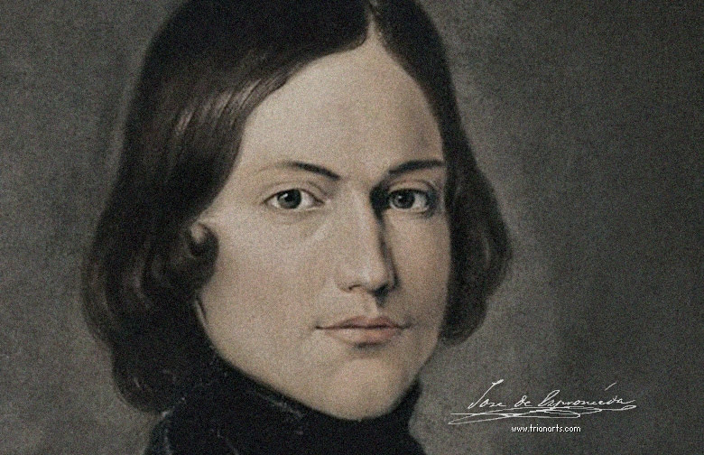

José de Espronceda
Mary Shelley

Espronceda nació en Almendralejo (provincia de Badajoz, Extremadura) el 25 de marzo de 1808. El nombre completo que le dieron al bautizarlo en ese mismo día fue «José Ignacio Javier Oriol Encarnación de Espronceda y Delgado». Era hijo del entonces sargento mayor del regimiento de caballería de Borbón Juan José Camilo de Espronceda y Fernández Pimentel, natural de Los Barrios y de cincuenta y nueve años, quien se desplazaba con su familia hacia Badajoz cuando advino el parto; su nacimiento en Almendralejo fue, pues, fortuito. Sus bisabuelos paternos eran comerciantes distinguidos establecidos en Tafalla (Navarra), y con antigua casa solariega allí, y su abuelo fue un militar competente que alcanzó el grado de teniente y dio a su hijo Juan José Camilo la misma carrera; este sirvió en la campaña de Gibraltar de 1782 a las órdenes del famoso escritor José Cadalso, quien murió allí, y se distinguió particularmente en la Guerra de la independencia, llegando así incluso a conseguir la cruz y medalla de la Orden de San Hermenegildo y el grado de coronel. Fue destinado a La Coruña con su familia. Durante el Trienio constitucional (1820-1823) estuvo en Guadalajara, y luego, hasta su lamentable fallecimiento en 1833, en Madrid.
La madre de José de Espronceda era María del Carmen Delgado y Lara y se había casado con Juan José Camilo en 1804 en Zaragoza; ambos eran viudos y habían tenido hijos ya fallecidos; aportó un dote. Su familia y ella misma estaba afincada en un pueblo.
Mary Wollstonecraft Godwin (de casada Mary Shelley; Londres, 30 de agosto de 1797-ibíd, 1 de febrero de 1851) fue una escritora dramaturga, ensayista y biógrafa británica3 reconocida principalmente por ser la autora de la novela gótica Frankenstein o el moderno Prometeo (1818), considerada la primera novela de ciencia ficción moderna y que logra inaugurar el género. También editó y promocionó las obras de su esposo, el poeta y filósofo romántico Percy Bysshe Shelley. Su padre fue el filósofo político William Godwin y su madre la filósofa Mary Wollstonecraft.
En 1814, Mary Godwin inició una relación sentimental con uno de los seguidores políticos de su padre, Percy Bysshe Shelley, quien ya estaba casado. Los dos, junto con la hermanastra de Mary, Claire Clairmont, vivieron en Francia y viajaron por Europa; a su regreso a Inglaterra, Mary estaba embarazada. Durante los siguientes dos años ella y Percy se enfrentaron al ostracismo social, a las deudas constantes y a la desgracia del fallecimiento de su hija, nacida prematuramente. Se casaron a finales de 1816, tras el suicidio de la primera esposa de Percy Shelley, Harriet.
En 1816, la pareja pasó un verano con George Gordon Byron, John William Polidori y Claire Clairmont cerca de Ginebra, Suiza, donde Mary concibió la idea para su novela Frankenstein. Los Shelley abandonaron Gran Bretaña en 1818 y se mudaron a Italia, en donde su segundo y su tercer hijo murió antes de haber dado luz a su segundo hijo.